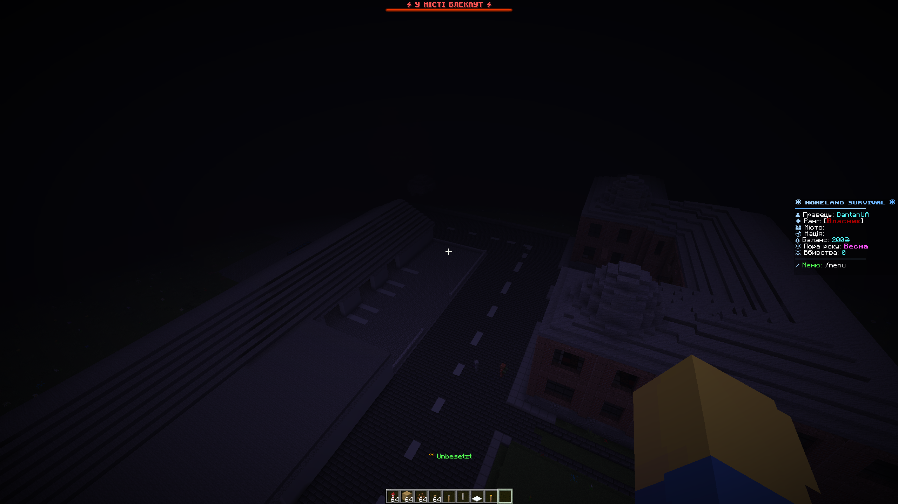

FLUGABWEHR, DROHNEN & BLACKOUTS
Dynamische Luftbedrohungen, Flugabwehrraketen und städtischer Energieschutz
Auf dem Server läuft ein automatisiertes Bedrohungssystem mit realistischen ballistischen Flugbahnen und Alarmierungen:
⏰ Angriffszeiten
Alarme werden dynamisch im Abstand von 2 bis 6 Stunden ausgelöst, ausschließlich zwischen 10:00 und 23:00 Uhr Kiewer Zeit. Die Nächte sind ruhig.
📍 Startvektoren
Drohnenstarts werden aus folgenden Himmelsrichtungen registriert: Krim, Odessa, Belarus, Sumy, Charkiw, Donbas in Richtung von Städten.
🚨 Landesweiter Alarm
Wird in allen Städten ausgelöst, die älter als 4 Tage sind. Viele Städte bleiben von Direkttreffern verschont, da Drohnen festgelegte Ziele ansteuern.
🔊 Sirenen & BossBar
In der Stadt ertönt eine mechanische Sirene mit ansteigendem Heulton, oben erscheint eine rote BossBar und auf Discord erfolgt ein Rollen-Ping.
Jede Drohne steuert Stadtkoordinaten an oder geht im Sturzflug auf den nächsten Spieler nieder:
🏹 Abschuss des Ziels
Eine Drohne wird mit 1 gezielten Treffer aus Bogen, Armbrust oder Dreizack vernichtet. Aus den Trümmern fällt Schrott: Eisen, Kupfer und Redstone.
💥 Kampferschütterung
Wird die Drohne nicht abgeschossen, schlägt sie ein und detoniert. Die Druckwelle verursacht ein schweres Barotrauma — Blindheit und Verlangsamung.
🛡️ Anti-Grief-Schutz (Blöcke, die NICHT zerstört werden)
Privates Eigentum in Städten ist geschützt. Die Drohnenexplosion zerstört NIEMALS:
- ❌ Kisten, Doppelkisten, Fässer
- ❌ Shulkerkisten, Öfen, Ambosse
- ❌ Enderkisten und Monster-Spawner
- ❌ Zaubertische und Leuchtfeuer (Beacons)
- ❌ Diamant-, Netherit- und Smaragdblöcke
- ❌ Gold-, Eisenblöcke und Obsidian
Schlägt eine Drohne innerhalb der Stadtgrenzen ein, besteht eine 50%ige Wahrscheinlichkeit für einen Netzausfall. Der Stromausfall dauert zwischen 1 und 5 echten Stunden.
💡 Ausfall der Beleuchtung
Sämtliche künstliche Beleuchtung der Stadt erlischt: Laternen, Fackeln und Redstone-Lampen schalten sich ab.
🔌 Redstone-Blockade
Die Elektronik versagt: Schalter und Hebel lassen sich nicht betätigen, Redstone-Schaltungen frieren komplett ein.
🌫️ Düsterer Nebel
Nachts senkt sich für alle Bürger ein dichter, finsterer Nebel über die Stadt, der Monsterangriffe noch gefährlicher macht.

Um Stadtbezirke vor Blackouts und Zerstörung zu schützen, kann das Rathaus Spezialbauten errichten:
⚡ Kraftwerk
- Mindestgröße: ab 4 Chunks.
- Bauvorgaben: Transformatoren, Direktorenbüro, Außenzäune, Kontrollpunkt/Wache, Aufenthaltsraum für Mitarbeiter.
- Funktion: verkürzt Blackouts in deiner Stadt drastisch oder verhindert sie vollständig.
- Ablenkung: Die meisten feindlichen Drohnen fliegen direkt das Kraftwerk an und verschonen Wohnhäuser!
🎯 Flugabwehr-Batterie
- Mindestgröße: ab 3 Chunks.
- Bauvorgaben: Radarstation, Gefechtsstand, Umzäunung, Wachposten, Kasernen, Schutzbunker, Lager, Raketenstartrampen.
- Funktion: zeigt ein Live-Luftlage-Radar und ermöglicht den manuellen Raketenabschuss direkt über ein GUI-Menü.
- Abschusskosten: Jeder Raketenstart kostet 200 Münzen. Zieht einen Teil der Angriffe auf sich.
Jeder Einschlag richtet Schaden an, daher stellt das Staatsbudget Ausgleichszahlungen für betroffene Gemeinden bereit:
💰 Auszahlung von Subventionen
Für jeden bestätigten Einschlag einer Drohne fließen automatisch zwischen 100 und 500 Münzen in die Reserve der Stadt.
📜 Einschlagsbuch
Im Bürgermeistermenü wird ein offizielles Register geführt mit genauer Uhrzeit und Höhe der Entschädigungssumme.
Liste aller Städte aufrufen, in denen aktuell aktiver Luftalarm herrscht.
Abschaltpläne der Städte und verbleibende Dauer bis zur Stromwiederkehr einsehen.
Wiederaufbaufonds-Menü öffnen und gesammelte Hilfsgelder abheben (nur Bürgermeister).